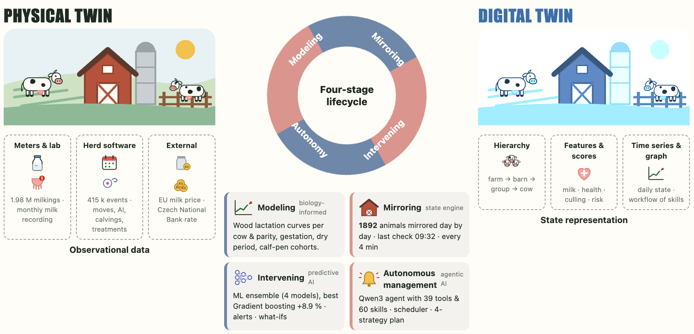
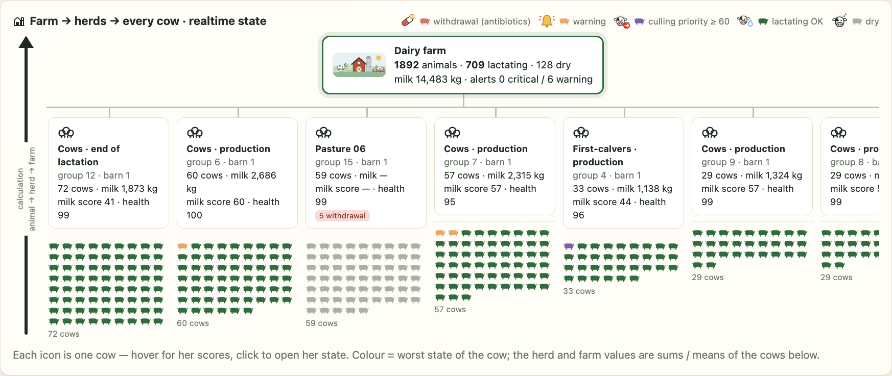
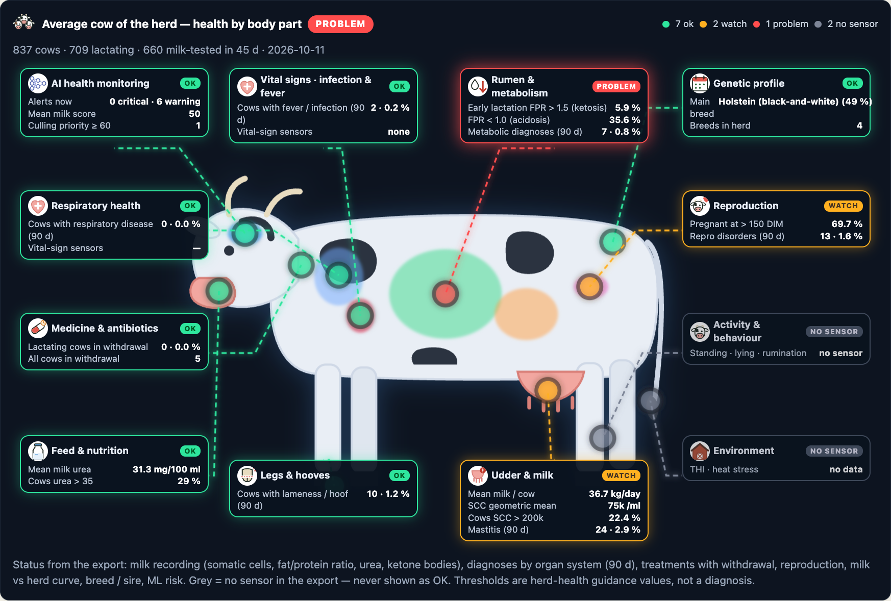
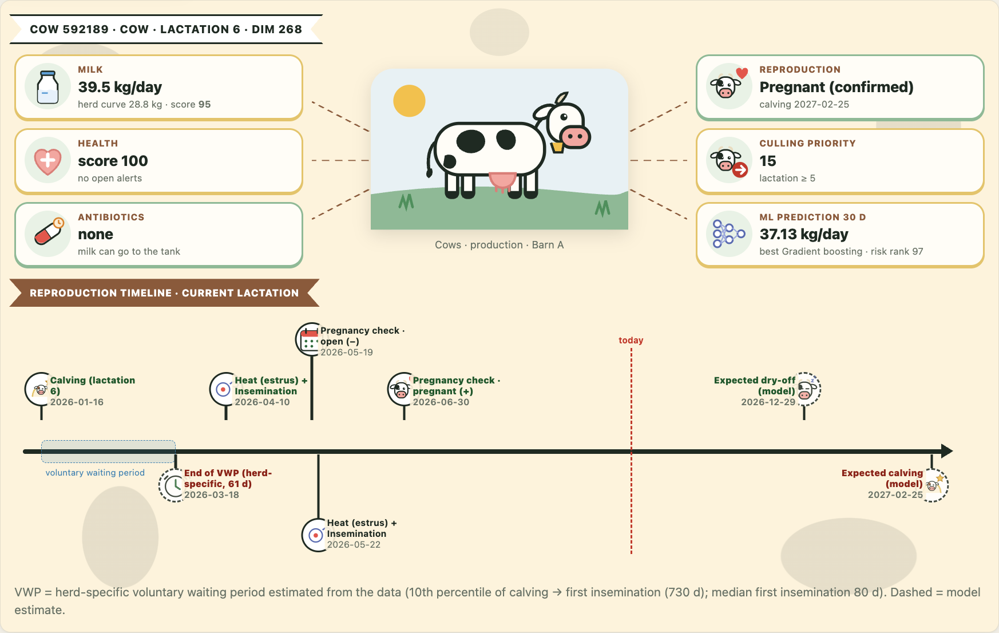
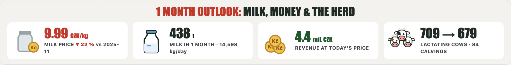
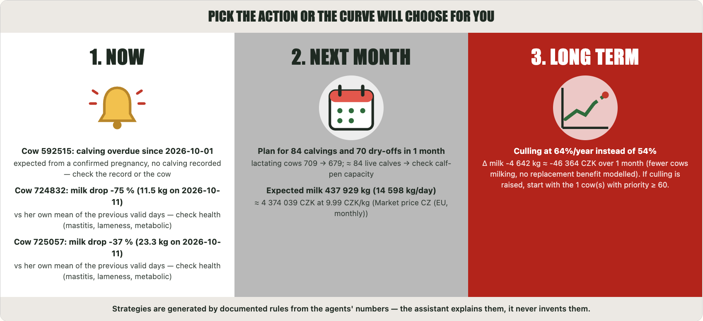
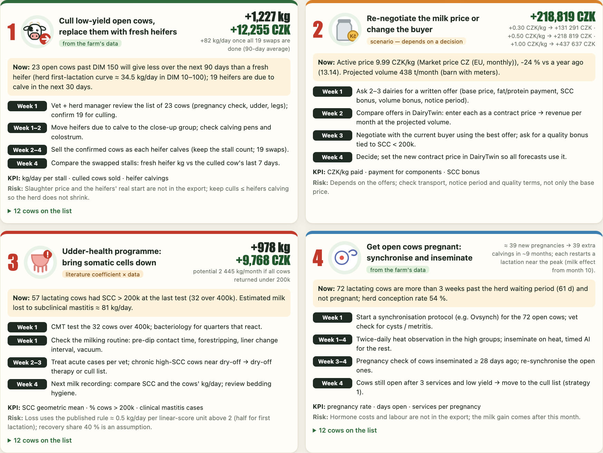
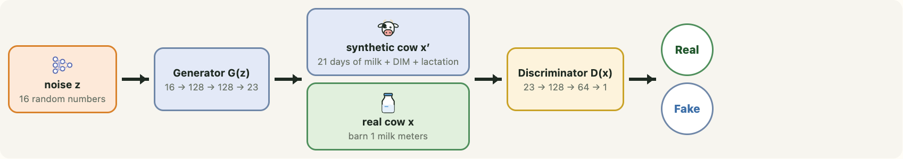
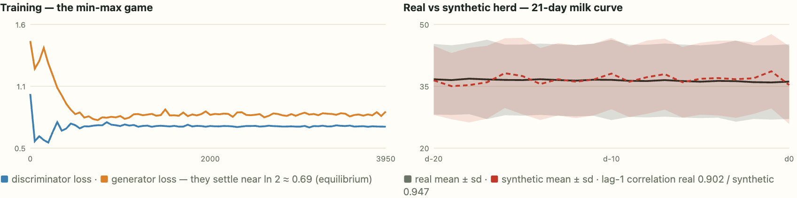

Agro Pitch Brussels · real data of a Czech dairy farm
An AI agent for the dairy farm, running on a digital twin of every cow, every herd and the whole farm. It watches the herd, forecasts milk and money, and tells the farmer what to do next month — in plain Czech. Built and validated on 10 years of real records of a dairy farm in Central Bohemia, Czech Republic. It runs on a laptop; the data never leaves the farm.
Our goal
Give every dairy farm an AI agent that turns the farm’s own records into daily decisions — more milk, healthier cows and a fairer milk price — without sending a single record to the cloud.
Key advantages
Impact · pilot farm · next month
Real pilot farm
DairyTwin was built and validated on the real records of a traditional mixed farm in the Central Bohemian Region — crops and livestock, several barns, a milking herd with individual milk meters. The farm stays anonymous; its data stays on its own computer.
The problem
Every milking, insemination, calving, move and treatment is already in the herd software. Yet the everyday questions — how much will we milk, which cows have a problem, should we cull or renegotiate the milk price — are answered by hand. Generic chatbots invent numbers and cannot see the farm’s data, and herd records must not go to a cloud.

Realtime · animal → herd → farm
Agents recompute the state every 4 minutes: per cow a milk score, a health score, antibiotic withdrawal and a culling priority; per herd the autonomously detected problems; for the farm the state and the alerts. Each result is stored with its time t.


Health by body part
The herd’s “average cow” — and every single cow — scanned by body system from monthly milk recording, diagnoses and treatments.
7 OK2 watch1 problem
One cow
Milk vs the herd curve, health, antibiotics, reproduction, culling priority and the ML forecast — plus her lactation timeline: calving, the herd’s waiting period (learned from the data), heats, inseminations, pregnancy, expected dry-off and calving.

Analytics · 3 days · 1 month · 6 months


Improve · next month
Each strategy names the cows, the weekly actions, the effect and whether it comes from the data, a literature coefficient or a scenario.

Machine learning · strict time split
| Model | Task | 3 days | 7 days | 30 days | Status |
|---|---|---|---|---|---|
| Ridge regression | milk yield | +4.5 % | +7.0 % | +7.6 % | validated |
| Random forest | milk yield | +6.1 % | +7.2 % | +8.8 % | validated |
| Gradient boosting | milk yield | +5.7 % | +7.6 % | +8.9 % | validated |
| Neural network (MLP) | milk yield | +4.9 % | +6.2 % | +8.3 % | validated |
| Logistic regression | disease risk 30 d | AUC 0.57 · top-10 % lift ×1.6 | experimental | ||
Improvement = lower mean absolute error than the reference (mean of the last 7 valid days), on held-out cutoffs after training.
Generative AI · GAN lab
A GAN (after Zhou et al. 2026, Digital Twin AI, arXiv:2601.01321) applied to four digital-twin tasks and reported exactly as measured: training models only on synthetic cows works (Ridge 1.83 vs 1.87 kg error), augmentation gives a small gain, a classifier still tells synthetic from real (AUC 0.98), and the anomaly score carries no disease signal.


The AI agent
Why the numbers can be trusted
| Check | Result |
|---|---|
| Automated tests (formulas with hand-checked reference examples, acceptance, SQL guard, agents, ML, GAN) | 169 passed |
| End-to-end validation of the running app (22 APIs, all 14 screens in a browser, same numbers everywhere) | 124 / 124 |
| Backtests use only data entered by each cutoff (no hindsight) | yes |
| Twin state = independent reconstruction, animal by animal | 1 892 / 1 892 |
Honest limits: the export has no activity, climate or feed sensors; costs are not deducted; the 6-month outlook and the risk model are labelled as estimates.
For farms and partners
DairyTwin runs locally on the farm’s own laptop: Python, a read-only database, local machine learning and a local LLM. The software is proprietary and not published; we offer pilots for dairy farms and licences for partners. Live demo on request.
Made by
Applied AI & Precision Livestock Farming
Researcher and lecturer at the Czech University of Life Sciences Prague, specialising in applied mathematics, informatics and artificial intelligence for the life sciences. His goal is to bridge the gap between advanced scientific methods and their practical use on farms — equipping the next generation of farmers with AI tools they can trust.